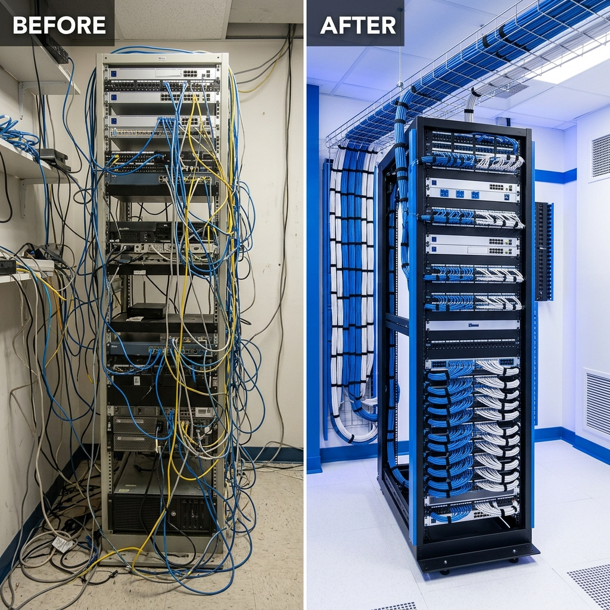

Solusi Pembuatan, Perbaikan & Manajemen Jaringan Komputer Profesional
Kami hadir di Surakarta melayani instalasi LAN, Fiber Optic, setting MikroTik, perbaikan darurat koneksi putus, serta pemeliharaan server untuk kantor, sekolah, kafe, ruko, dan industri. Cepat, rapi, stabil, dan bergaransi!
Solusi Jaringan
Profesional yang
Stabil & Handal
Pembuatan, perbaikan darurat, dan manajemen jaringan komputer profesional untuk kantor, kafe, sekolah, hotel, & industri di Surakarta — dikerjakan teknisi tersertifikasi TJKT.
3 Layanan Unggulan di Kota Surakarta
Dukungan teknis menyeluruh dari hulu ke hilir untuk kestabilan konektivitas Anda
1. Pembuatan Jaringan Baru
Instalasi kabel LAN Cat6/Cat6A, sambungan Fiber Optic, penataan rack server, dan setting Access Point untuk kantor atau tempat usaha baru di Solo.
2. Perbaikan & Troubleshooting
Penanganan cepat internet putus-nyambung (RTO), kabel putus/digigit tikus, switch hang, router error, dan gangguan jaringan area Surakarta.
3. Manajemen & Maintenance
Konfigurasi MikroTik (QoS & pembagian bandwidth), hotspot voucher WiFi, firewall keamanan jaringan, serta pemeliharaan berkala agar perangkat awet.
Keunggulan Layanan SkyNet Solusindo
Tiga Pilar Layanan Kami
Dukungan teknis menyeluruh untuk memastikan konektivitas jaringan bisnis Anda selalu prima
Pembuatan Jaringan
Instalasi LAN Cat6/Cat6A, Fiber Optic, rack server, dan Access Point enterprise dari nol hingga siap operasi.
Perbaikan & Troubleshooting
Penanganan cepat internet mati, RTO, kabel putus, loop switch, dan gangguan jaringan darurat 24/7 area Solo.
Manajemen & Maintenance
Setup MikroTik, QoS bandwidth, hotspot voucher, firewall, failover dual-ISP, dan kontrak perawatan rutin.
Mengapa
Memilih
SkyNet
Solusindo?
Kami bukan sekadar teknisi — kami adalah mitra andal bisnis Anda dalam memastikan jaringan beroperasi tanpa hambatan setiap harinya.
Teknisi Tersertifikasi TJKT
Dikerjakan oleh teknisi ahli berpengalaman dengan sertifikasi MikroTik & standar instalasi jaringan telekomunikasi terkini.
Tim profesional berpengalaman dengan sertifikasi industri MikroTik dan standar instalasi kabel telekomunikasi terkini.
Pengerjaan Rapi & Cepat
Manajemen kabel rapi (cable duct/tray), penandaan port jelas, dan pengerjaan tepat waktu tanpa mengganggu jam kerja Anda.
Pengerjaan Rapi & Cepat
Kabel dikelola dengan cable duct/tray, port diberi label jelas, dan pekerjaan diselesaikan tepat waktu tanpa mengganggu operasional.
Garansi Layanan Nyata
Memberikan garansi perbaikan dan purna jual untuk memastikan jaringan Anda tetap stabil beroperasi setiap hari.
Garansi Purnajual Nyata
Setiap pekerjaan disertai kartu garansi 30 hari hingga 3 bulan. Kami tidak selesai sampai jaringan Anda benar-benar stabil.
Siaga Area Surakarta
Lokasi strategis di Surakarta menjangkau Banjarsari, Jebres, Laweyan, Pasar Kliwon, Serengan hingga Solo Baru & Kartasura.
Jangkauan Area Solo Raya
Berbasis di Surakarta, kami menjangkau seluruh kecamatan kota hingga Kartasura, Solo Baru, Colomadu, dan Sukoharjo.
"Dalam 45 menit sejak kami telepon, teknisi SkyNet sudah ada di lokasi dan jaringan kantor kami kembali normal. Luar biasa responsif!"
Layanan Jaringan Komputer di Surakarta
Kami menyediakan paket lengkap mulai dari perancangan arsitektur jaringan baru, servis perbaikan darurat, hingga manajemen server & router enterprise.
Layanan Jaringan Komputer Surakarta
Dari perancangan, instalasi, hingga pemeliharaan — kami menangani keseluruhan siklus hidup infrastruktur jaringan Anda
Perancangan & Instalasi Jaringan Baru
Membangun infrastruktur jaringan kabel dan nirkabel dari nol dengan topologi standar TIA/EIA untuk koneksi gigabit yang stabil.
- Kabel UTP/STP Cat6/Cat6A: Penarikan rapi dalam conduit, crimping presisi, uji cable tester
- Fiber Optic Dropcore & Splicing: Penarikan & penyambungan FO dengan fusion splicer untuk OTB, ODP
- Rack Server & Patch Panel: Penataan rapi dalam rack 19" dengan labeling fluke-standard
- Access Point WiFi Enterprise: Setting UniFi, Ruijie, MikroTik untuk jangkauan roaming seamless
Perbaikan & Troubleshooting Jaringan
Penanganan cepat segala gangguan jaringan — dari internet lambat hingga koneksi total mati — dengan diagnosis akurat dan solusi permanen.
- Deteksi Kabel Putus & RTO: Pelacakan dengan VFL/OTDR, perbaikan titik putus presisi
- Broadcast Storm & Loop Switch: Menemukan & mengeliminasi loop penyebab lumpuhnya seluruh LAN
- IP Conflict & DHCP Issue: Penataan ulang alokasi IP, reservasi DHCP statik per perangkat
- Penggantian Perangkat Rusak: Switch, adaptor PoE, media converter, router pengganti darurat
Manajemen Bandwidth & Keamanan Jaringan
Mengoptimalkan lalu lintas data agar adil, aman, dan terkontrol secara profesional menggunakan MikroTik RouterOS atau Cisco IOS.
- Queue Tree & PCQ: Pembagian bandwidth fair — rapat video tetap lancar meski karyawan lain streaming
- Hotspot Billing & Voucher WiFi: Monetisasi internet kafe, kost-kostan, dan fasilitas umum
- Firewall & Content Filtering: Blokir situs terlarang, batasi akses game di jam kerja
- Failover Dual-ISP & VPN: Internet otomatis pindah ISP saat down, interkoneksi cabang via WireGuard
Kontrak Maintenance Rutin & Monitoring 24/7
Lindungi investasi jaringan Anda dengan pemeliharaan proaktif. Tersedia paket bulanan untuk kantor pemerintahan, klinik, sekolah, dan perusahaan: audit perangkat, pembersihan rack, firmware update, backup konfigurasi, dan laporan kondisi jaringan bulanan.
4 Langkah Mudah
Konsultasi & Survey
Hubungi kami. Tim siap survey lokasi di area Surakarta untuk analisa topologi & kebutuhan perangkat secara gratis.
Perencanaan & RAB
Kami menyusun skema jaringan, pemilihan perangkat optimal, dan Rencana Anggaran Biaya yang transparan.
Eksekusi & Instalasi
Pengerjaan oleh teknisi berpengalaman dengan standar kerapian dan konfigurasi optimal tanpa ganggu operasional.
Uji & Serah Terima
Pengujian throughput, latensi, dan sinyal sebelum serah terima disertai kartu garansi dan dokumentasi teknis.
Paket Layanan & Estimasi Harga
Harga disesuaikan dengan kebutuhan. Semua paket sudah termasuk survey, konfigurasi, dan garansi purnajual.
Starter
Untuk UMKM, warung, kost, atau rumah kantor kecil
- Survey & konsultasi gratis
- Setting router/modem dasar
- Penarikan kabel LAN hingga 25m
- Konfigurasi 1 Access Point
- Garansi pengerjaan 30 hari
- Rack server & patch panel
- Fiber optic splicing
Perancangan & Pembuatan Jaringan Baru (LAN, WAN, & Fiber Optic)
Membangun infrastruktur jaringan kabel dan nirkabel dari nol dengan topologi terstandarisasi, memastikan koneksi stabil dengan latensi ultra-rendah.
- Instalasi Kabel UTP/STP Cat6/Cat6A: Penarikan kabel rapi berstandar TIA/EIA, crimping presisi, dan uji flukemeter/cable tester.
- Penyambungan & Penarikan Fiber Optic: Splicing presisi tinggi dengan fusion splicer untuk dropcore, OTB, ODP, dan pigtail.
- Pemasangan Rack Server & Patch Panel: Penataan kabel teratur di dalam rack server 19 inch (wallmount maupun closed rack).
- Pemasangan Access Point (WiFi Enterprise): Setting UniFi, Ruijie, atau MikroTik untuk jangkauan roaming tanpa putus di kantor/kafe.
Professional
Untuk kantor, kafe, sekolah, dan bisnis menengah
- Survey & konsultasi gratis
- Setup MikroTik + QoS bandwidth
- Kabel LAN Cat6 hingga 100m
- Konfigurasi hingga 4 Access Point
- Hotspot voucher system
- Firewall & content filtering
- Garansi pengerjaan 60 hari
Perbaikan & Troubleshooting Jaringan (Emergency Area Solo)
Solusi cepat mengatasi jaringan internet mati, lemot, putus-nyambung (RTO tinggi), kabel rusak, hingga router yang sering hang.
- Deteksi & Perbaikan Kabel Putus: Pelacakan kabel putus dengan visual fault locator (VFL) dan penarikan/crimping ulang konektor.
- Mengatasi Broadcast Storm & Loop: Menemukan loop switch yang melumpuhkan seluruh jaringan lokal.
- Penyelesaian IP Conflict & DHCP Issue: Menata ulang alokasi IP dinamis dan statis agar tidak bentrok.
- Ganti & Konfigurasi Ulang Perangkat Rusak: Penggantian switchboard, adaptor PoE, converter FO, atau router pengganti darurat.
Enterprise
Untuk gedung, hotel, pabrik, dan instansi besar
- Desain topologi jaringan lengkap
- Fiber optic backbone antar gedung
- Rack server & patch panel rapi
- VLAN segmentasi per divisi
- Failover dual-ISP & VPN site-to-site
- Monitoring & kontrak maintenance
- Garansi purnajual 3 bulan
Harga bersifat estimasi dan dapat berubah sesuai kondisi lapangan, panjang kabel, jumlah perangkat, dan kompleksitas konfigurasi. Survey lokasi gratis untuk mendapatkan RAB yang akurat.
Tabel Perbandingan Paket
| Fitur | Starter | Professional | Enterprise |
|---|---|---|---|
| Survey & Konsultasi Gratis | |||
| Setting Router & Modem | |||
| Instalasi Kabel LAN Cat6 | Hingga 25m | Hingga 100m | Unlimited |
| Setup MikroTik & QoS | |||
| Hotspot Voucher System | |||
| Fiber Optic & Splicing | |||
| VLAN Segmentasi | |||
| Failover Dual-ISP | |||
| Garansi Purnajual | 30 Hari | 60 Hari | 3 Bulan |
Proyek Terlaksana di Surakarta
Dokumentasi instalasi, konfigurasi, dan restrukturisasi jaringan yang telah kami selesaikan dengan sukses di Kota Solo dan sekitarnya

WiFi High-Density & Hotspot Voucher Kafe
4 Access Point WiFi 6, MikroTik RB4011, 200+ user aktif bersamaan
Setup, Manajemen Bandwidth & Keamanan Jaringan (MikroTik / Cisco)
Mengatur lalu lintas data internet agar adil, tidak rebutan bandwidth, aman dari penyusup, dan terkontrol secara profesional.
- Bandwidth Management (Queue Tree / PCQ): Menjamin zoom meeting & transaksi kasir lancar meski karyawan lain sedang download.
- Hotspot Billing / Sistem Voucher WiFi: Solusi monetisasi internet kafe, kost-kostan, dan tempat umum di Surakarta.
- Firewall & Filtering Konten: Memblokir situs terlarang, membatasi akses game di jam kerja, dan proteksi dari serangan brute-force.
- Load Balancing & Failover Multi-ISP: Menggabungkan 2 koneksi ISP berbeda agar internet otomatis pindah jika salah satu provider down.
- VPN Interkoneksi (WireGuard / OpenVPN): Menghubungkan kantor cabang ke kantor pusat dengan aman dari mana saja.
Kontrak Maintenance Rutin & Monitoring 24/7 di Surakarta
Cegah kerugian bisnis akibat down jaringan mendadak dengan pemeliharaan rutin. Kami melayani kontrak bulanan untuk kantor pemerintahan, klinik, sekolah, dan perusahaan di Surakarta. Meliputi pengecekan fisik perangkat, pembersihan rack server dari debu, update firmware berkala, backup file konfigurasi, dan audit berkala.
Fiber Optic & Lab Komputer TJKT
FO 4-core antar gedung, 45 titik LAN Cat6, managed switch gigabit
4 Langkah Mudah Menggunakan Layanan Kami
Restrukturisasi Rack Server & VLAN
Re-cabling rack 24U, patch panel, labeling, VLAN per divisi
Konsultasi & Survey
Hubungi tim kami. Kami siap melakukan survey fisik lokasi di area Surakarta untuk analisa topologi dan kebutuhan.
Perencanaan & RAB
Kami menyusun skema topologi jaringan, pemilihan perangkat terbaik, dan estimasi biaya (RAB) yang transparan.
Eksekusi & Instalasi
Pengerjaan oleh teknisi berpengalaman dengan standar kerapian tinggi, terminasi presisi, dan konfigurasi optimal.
Uji Beban & Garansi
Pengujian throughput, latensi, dan jangkauan sinyal sebelum serah terima serta pemberian kartu garansi resmi.
Failover Dual-ISP & VPN Interkoneksi Cabang
Zero-downtime failover < 1 detik, WireGuard VPN site-to-site
Kata Mereka tentang Kami
Portofolio Proyek di Area Surakarta
Beberapa dokumentasi instalasi kabel, perapihan rack server, dan konfigurasi jaringan nyata yang telah kami selesaikan dengan sukses di Kota Solo dan sekitarnya.
"WiFi kafe kami di Laweyan selalu diprotes pengunjung karena sering putus. Setelah SkyNet setting ulang MikroTik dan pasang 4 AP baru, sudah lancar jaya meski malam minggu ramai 100+ orang!"
"Kabel LAN kantor kami dikerjakan sangat rapi — masuk semua di ducting, ada label di setiap port. Teknisinya profesional dan pengerjaan lebih cepat dari estimasi. Sangat memuaskan!"
"Jaringan lab komputer sekolah kami dibangun dari nol oleh SkyNet. Hasilnya sangat memuaskan — 45 PC berjalan lancar semua, kabel rapi, dan dokumentasi topologi lengkap diberikan."
Instalasi WiFi High-Density & Sistem Hotspot Voucher
Pemasangan 4 Access Point WiFi 6 dengan MikroTik RB4011 untuk menangani lebih dari 200 user aktif bersamaan tanpa hambatan lag saat streaming dan browsing.
Infrastruktur Fiber Optic & Jaringan Lab Komputer TJKT
Penarikan kabel Fiber Optic 4-Core antar gedung sekolah, splicing OTB, serta instalasi kabel LAN Gigabit Cat6 untuk 45 PC client laboratorium komputer siswa.
Restrukturisasi & Penataan Ulang Rack Server 24U
Perbaikan kabel semrawut (spaghetti cables) pada ruang server kantor, penambahan patch panel, labeling jalur kabel, dan konfigurasi ulang segmentasi VLAN.
Tim Teknisi Profesional Kami
Kelompok 6 TJKT — teknisi muda berpengalaman yang berdedikasi penuh untuk memastikan jaringan Anda selalu prima
Failover Otomatis Dual-ISP & Interkoneksi VPN Kantor Cabang
Penerapan teknologi multi-WAN load balancing otomatis beralih dalam 1 detik ketika ISP utama mati, serta interkoneksi secure WireGuard VPN antar kantor cabang.
Ketua Kelompok
Network Engineer LeadSpesialis perancangan topologi jaringan enterprise dan konfigurasi MikroTik RouterOS.
Apa Kata Klien Kami di Surakarta?
Anggota — Kabel & FO
Fiber Optic TechnicianAhli penarikan & penyambungan fiber optic dengan fusion splicer dan pengujian OTDR.
"Kafe kami di Laweyan sering diprotes pengunjung karena WiFi putus-nyambung. Setelah di-setting ulang MikroTik & Access Point oleh SkyNet Solusindo, koneksi lancar jaya meski malam minggu penuh 100+ orang."
"Pengerjaan kabel LAN kantor kami di Slamet Riyadi sangat rapi, masuk ducting dan tidak ada kabel menjuntai. Teknisi sangat mengerti kebutuhan jaringan korporat dan tepat waktu."
Anggota — Keamanan
Network Security SpecialistFokus pada implementasi firewall, filtering, VPN, dan hardening keamanan jaringan bisnis.
Anggota — Server
Server & Infrastructure AdminMenangani penataan rack server, konfigurasi switch managed, VLAN, dan monitoring jaringan.
Hubungi Kami & Jadwalkan Teknisi di Surakarta
Punya masalah internet kantor atau butuh penarikan kabel baru? Sampaikan kebutuhan Anda, tim kami siap survey lokasi atau berikan konsultasi gratis.
Didukung Keahlian Terstandarisasi
Kontak Resmi SkyNet Solusindo
Layanan pembuatan, perbaikan, dan manajemen jaringan komputer handal berpusat di Kota Surakarta.
Merek yang Kami Kuasai
Jl. Slamet Riyadi No. 123, Kel. Sriwedari, Kec. Laweyan, Kota Surakarta, Jawa Tengah 57141
Chat Langsung WhatsApp (Klik di sini)
082313974213
Jadwalkan Teknisi ke Lokasi Anda
Punya gangguan jaringan atau butuh instalasi baru? Isi formulir atau langsung chat — tim kami merespons dalam hitungan menit.
Informasi Kontak
SkyNet Solusindo siap melayani kebutuhan jaringan Anda di seluruh wilayah Kota Surakarta dan Solo Raya.
Senin – Sabtu: 08.00 – 20.00 WIB
*Layanan Darurat Jaringan: Siaga
24/7
Banjarsari, Jebres, Laweyan, Pasar Kliwon, Serengan, Kartasura, Solo Baru, Palur, Colomadu, & Sukoharjo.
Jl. Slamet Riyadi No. 123, Kel. Sriwedari, Kec. Laweyan, Kota Surakarta, Jawa Tengah 57141
Kirim Pesan / Request Survei
Isi formulir berikut, teknisi kami akan merespons dalam waktu kurang dari 15 menit.
Terima kasih. Kami telah menerima rincian Anda dan tim teknisi Surakarta kami segera menghubungi via WhatsApp.
082313974213
Senin–Sabtu: 08.00–20.00 WIB
*Darurat Jaringan: Siaga 24/7
Banjarsari · Jebres · Laweyan · Pasar Kliwon · Serengan · Kartasura · Solo Baru · Colomadu · Sukoharjo
FAQ Seputar Layanan Jaringan di Surakarta
Untuk layanan darurat perbaikan jaringan di area inti Kota Surakarta (Banjarsari, Jebres, Laweyan, Pasar Kliwon, Serengan), teknisi kami dapat tiba di lokasi dalam rentang 30 - 60 menit setelah konfirmasi panggilan.
Kirim Permintaan Layanan
Isi formulir berikut — tim kami merespons < 15 menit.
Ya! Untuk instalasi jaringan kantor, sekolah, kafe, atau instansi di wilayah Kota Surakarta, kami memberikan survei lokasi dan konsultasi awal secara GRATIS untuk menghitung kebutuhan kabel dan perangkat yang akurat.
Teknisi kami akan segera menghubungi Anda via WhatsApp. Terima kasih telah mempercayai SkyNet Solusindo.
Pertanyaan yang Sering Ditanyakan
Untuk area inti Kota Surakarta (Banjarsari, Jebres, Laweyan, Pasar Kliwon, Serengan), teknisi kami dapat tiba dalam 30–60 menit setelah konfirmasi panggilan darurat.
Ya! Untuk instalasi jaringan kantor, sekolah, kafe, atau instansi di wilayah Kota Surakarta, kami memberikan survei lokasi dan konsultasi awal secara GRATIS untuk menghitung kebutuhan perangkat yang akurat.
Pasti! Setiap pekerjaan instalasi atau konfigurasi disertai masa garansi 30 hari hingga 3 bulan tergantung paket, disertai kartu garansi resmi untuk ketenangan bisnis Anda.
Kami menguasai MikroTik RouterBOARD, Cisco, Ubiquiti UniFi, Ruijie Reyee, TP-Link Omada, D-Link, Huawei, serta perangkat Fiber Optic dari ZTE dan Fiberhome.
Ya, kami menyediakan kontrak pemeliharaan jaringan bulanan untuk kantor, klinik, sekolah, dan perusahaan di Surakarta. Layanan meliputi pengecekan berkala, firmware update, backup konfigurasi, dan laporan kondisi jaringan.